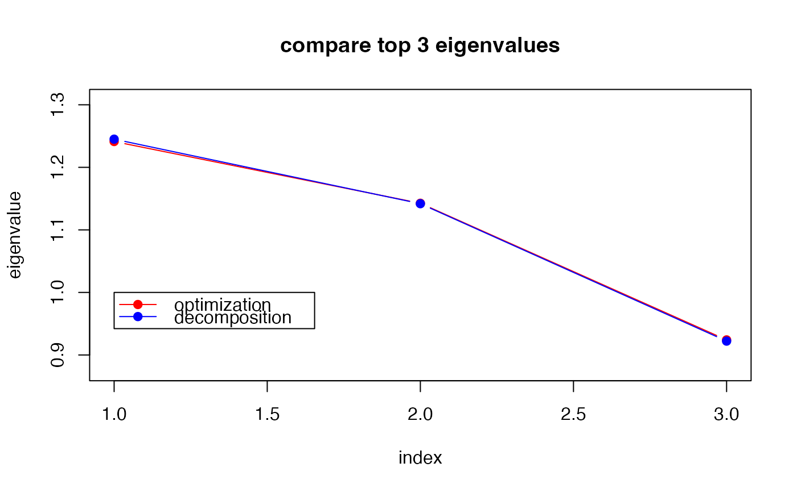

Simulated Annealing is a black-box, derivative-free optimization algorithm
that iterates via stochastic search in the neighborhood of current position.
stiefel.optSA solves the following problem
$$\min_X f(X),\quad X \in St(p,k)$$
without any other auxiliary information such as gradient or hessian involved.
stiefel.optSA(func, p, k, ...)
| func | a function to be minimized. |
|---|---|
| p | dimension parameter as in \(St(k,p)\). |
| k | dimension parameter as in \(St(k,p)\). |
| ... | extra parameters for SA algorithm including number of runs; algorithm is executed size of random walk on each component (default: 0.1). maximum number of iterations for each run (default: 100). triplet for cooling schedule. See the section for the usage. if a logical; if |
a named list containing:
minimized function value.
a \((p\times k)\) matrix that attains the cost.
frequency of acceptance moves.
#------------------------------------------------------------------- # Optimization for Eigen-Decomposition # # Given (5x5) covariance matrix S, eigendecomposition is indeed # an optimization problem cast on the stiefel manifold. Here, # we are trying to find top 3 eigenvalues and compare. #------------------------------------------------------------------- ## PREPARE set.seed(121) # set seed A = cov(matrix(rnorm(100*5), ncol=5)) # define covariance myfunc <- function(p){ # cost function to minimize return(sum(-diag(t(p)%*%A%*%p))) } ## SOLVE THE OPTIMIZATION PROBLEM Aout = stiefel.optSA(myfunc, p=5, k=3, n.start=40, maxiter=200) ## COMPUTE EIGENVALUES # 1. USE SOLUTIONS TO THE ABOVE OPTIMIZATION abase = Aout$solution eig3sol = sort(diag(t(abase)%*%A%*%abase), decreasing=TRUE) # 2. USE BASIC 'EIGEN' FUNCTION eig3dec = sort(eigen(A)$values, decreasing=TRUE)[1:3] ## VISUALIZE opar <- par(no.readonly=TRUE) yran = c(min(min(eig3sol),min(eig3dec))*0.95, max(max(eig3sol),max(eig3dec))*1.05) plot(1:3, eig3sol, type="b", col="red", pch=19, ylim=yran, xlab="index", ylab="eigenvalue", main="compare top 3 eigenvalues")par(opar)